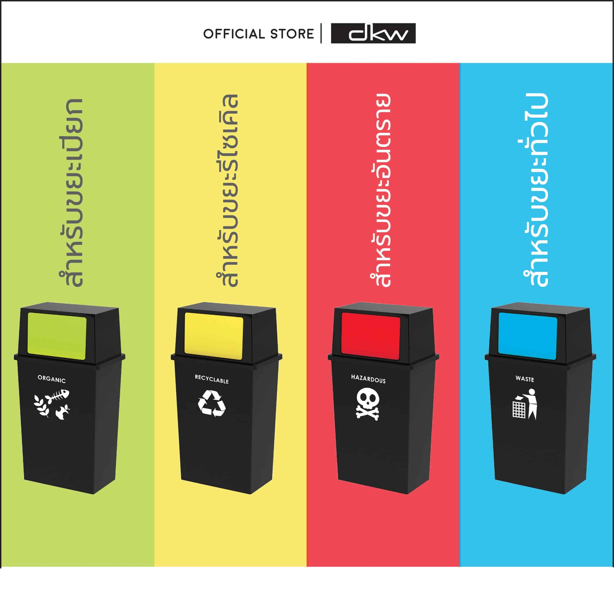
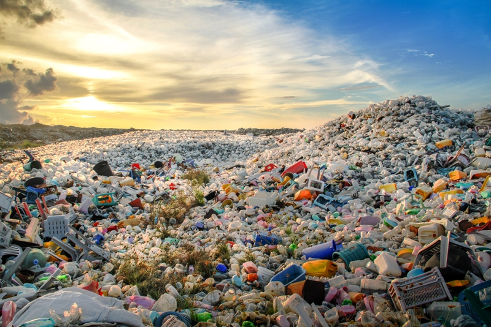
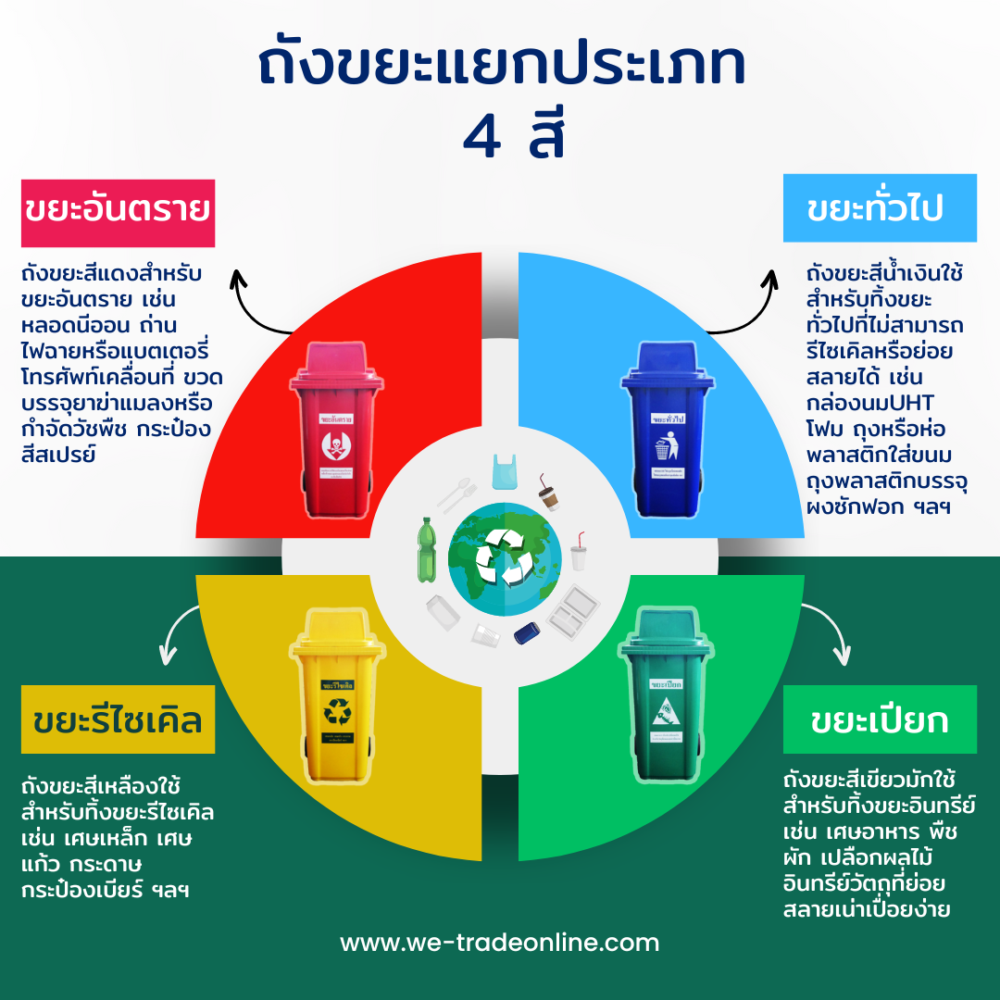
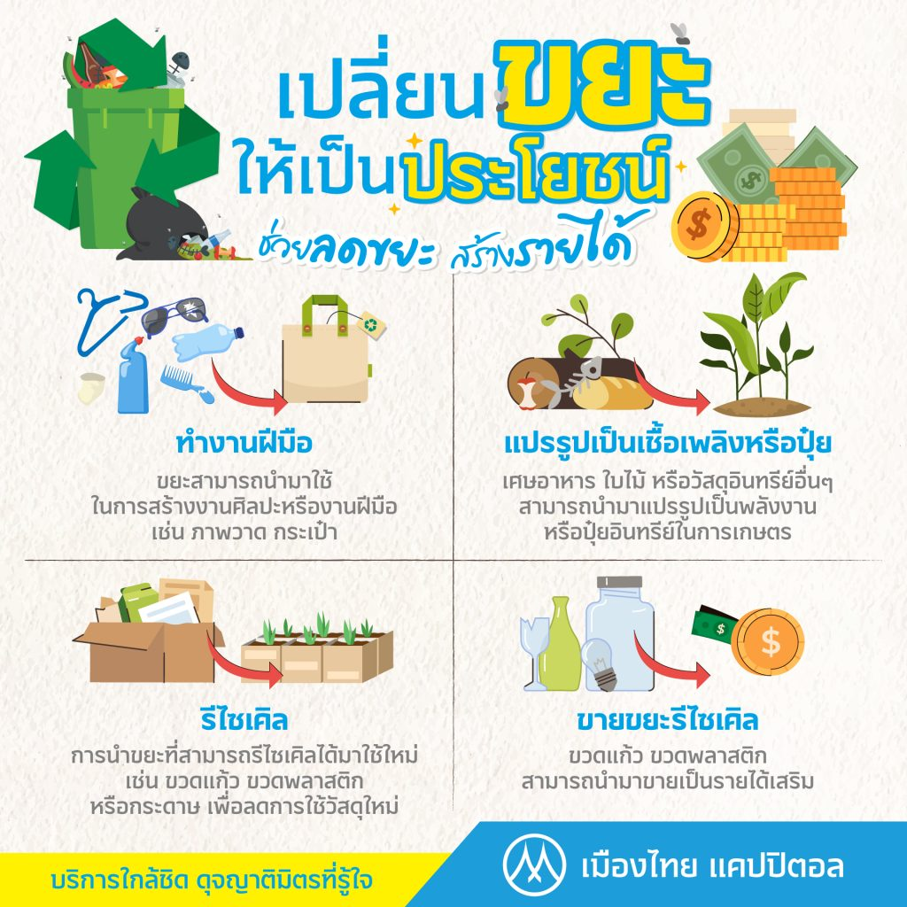
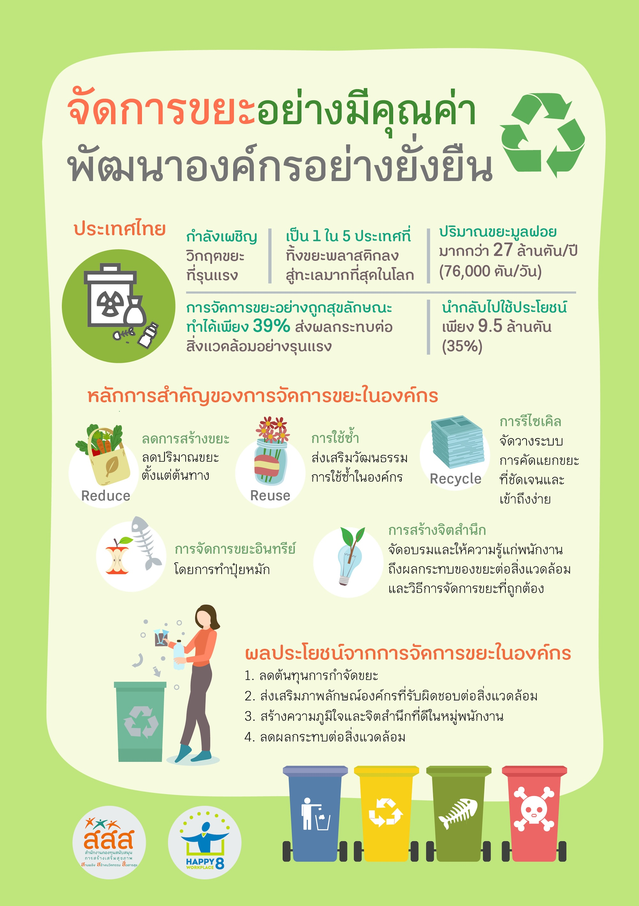

การคัดแยกขยะ

| ในปัจจุบันปริมาณขยะที่เกิดขึ้นในแต่ละปีมีจำนวนเพิ่มขึ้นอย่างรวดเร็ว ซึ่งเกิดจากการเปลี่ยนแปลงในรูปแบบการบริโภคและการใช้ชีวิตของมนุษย์ที่เน้นการใช้สิ่งของพลาสติกและวัสดุใช้แล้วทิ้งมากขึ้น ส่งผลให้เกิดขยะที่ไม่สามารถย่อยสลายได้หรือรีไซเคิลได้ง่าย นอกจากนี้ยังมีปัญหาในการจัดการขยะในหลายประเทศ โดยเฉพาะในประเทศที่มีอัตราการเติบโตของประชากรสูงและการพัฒนาเศรษฐกิจอย่างรวดเร็ว |
ประเภทของขยะ

-
ขยะอินทรีย์ (Organic Waste)
-
ขยะประเภทนี้ประกอบด้วยสิ่งของที่ย่อยสลายได้ เช่น เศษอาหาร, ผัก, ผลไม้, ใบไม้, เศษหญ้า เป็นต้น
-
สามารถนำไปทำปุ๋ยหมักหรือนำไปทำเป็นพลังงานชีวมวลได้
- ขยะรีไซเคิล (Recyclable Waste)
-
ขยะที่สามารถนำกลับมาใช้ใหม่ เช่น กระดาษ, พลาสติก, แก้ว, โลหะ, และขวดน้ำพลาสติก
-
การรีไซเคิลช่วยลดการใช้ทรัพยากรใหม่และลดการปล่อยก๊าซเรือนกระจก
- ขยะอันตราย (Hazardous Waste)
-
ขยะประเภทนี้มีความอันตรายต่อสุขภาพหรือสิ่งแวดล้อม เช่น แบตเตอรี่, สารเคมี, ยาฆ่าแมลง, หลอดไฟฟลูออเรสเซนต์
-
ควรทิ้งในที่ที่เหมาะสมเพื่อหลีกเลี่ยงการรั่วไหลของสารอันตราย
- ขยะทั่วไป (General Waste)
|
--------------------------------------------------------------------------------------------------
ปัญหาจากการเพิ่มขึ้นของขยะ

-
ปัญหาสิ่งแวดล้อม
-
ขยะที่ไม่ได้รับการจัดการอย่างเหมาะสมทำให้เกิดการปนเปื้อนในแหล่งน้ำ, ดิน, และอากาศ
-
การฝังกลบขยะที่ไม่ถูกต้องหรือการเผาขยะในที่โล่งจะทำให้เกิดการปล่อยสารพิษ เช่น สารโลหะหนัก หรือสารเคมีที่มีผลต่อสิ่งแวดล้อม
- การสิ้นเปลืองทรัพยากรธรรมชาติ
- การสะสมขยะในพื้นที่ฝังกลบ
|
--------------------------------------------------------------------------------------------------
ขั้นตอนการคัดแยกขยะ

-
เตรียมถังขยะ: ควรมีถังขยะแยกประเภทสำหรับขยะแต่ละชนิด เช่น ถังขยะสีเขียวสำหรับขยะอินทรีย์, ถังขยะสีเหลืองสำหรับขยะรีไซเคิล, ถังขยะสีแดงสำหรับขยะอันตราย และถังขยะสีเทาสำหรับขยะทั่วไป
-
แยกขยะที่ต้นทาง: การคัดแยกขยะตั้งแต่การทิ้งขยะที่บ้านหรือที่ทำงานจะช่วยให้กระบวนการรีไซเคิลหรือการจัดการขยะทำได้ง่ายขึ้น
-
การรีไซเคิล: ขยะรีไซเคิล เช่น กระดาษ, พลาสติก, โลหะ ควรทำความสะอาดก่อนทิ้งเพื่อให้สามารถนำไปรีไซเคิลได้
-
การจัดการขยะอินทรีย์: สามารถนำขยะอินทรีย์ไปทำปุ๋ยหมักหรือใช้ในการผลิตพลังงานชีวมวล
-
การจัดการขยะอันตราย: ควรทิ้งในที่ที่กำหนดหรือส่งไปยังสถานที่ที่รับจัดการขยะอันตรายโดยเฉพาะ
|
--------------------------------------------------------------------------------------------------
ประโยชน์ของการคัดแยกขยะ

-
ลดการปนเปื้อน: ขยะที่ถูกแยกอย่างถูกต้องจะช่วยลดการปนเปื้อนและปัญหาสุขภาพ
-
ประหยัดทรัพยากร: การรีไซเคิลช่วยประหยัดทรัพยากรธรรมชาติ เช่น น้ำมัน, เหล็ก, และพลาสติก
-
ลดปริมาณขยะที่ทิ้งลงหลุมฝังกลบ: การแยกขยะอินทรีย์และขยะรีไซเคิลช่วยลดปริมาณขยะที่ต้องนำไปฝังกลบ
|
--------------------------------------------------------------------------------------------------
แนวทางในการส่งเสริมการคัดแยกขยะ

-
การจัดอบรมหรือให้ความรู้แก่ประชาชนเกี่ยวกับการคัดแยกขยะ
-
การเพิ่มจุดรับขยะรีไซเคิลในชุมชน
-
การส่งเสริมให้มีการใช้ผลิตภัณฑ์ที่สามารถนำกลับมาใช้ใหม่
-
การจัดทำระบบการรับขยะอันตรายในชุมชน
|
--------------------------------------------------------------------------------------------------
แนวทางการแก้ปัญหาขยะในปัจจุบัน

-
การลดการใช้พลาสติก
- การรีไซเคิลขยะอิเล็กทรอนิกส์
- การคัดแยกขยะตั้งแต่ต้นทาง
|

|